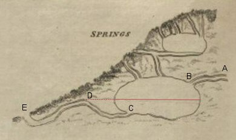

Here's a description of how syphoning springs work, following that given by Charles Hutton* in 17961:
|  |
Essentially, the cavity fills with water through AB and the water tries to leave via C, but it has to get over hump D before it can. To do this, the cavity needs to fill to the line. At this point, the water cascades over D. If the tube CDE is reasonably airtight, the water falling from D to E will drag water from the cavity over the hump and this will continue until the cavity is emptied to C (the syphon effect: Info). Once all the water has gone, the spring at E stops, and the cavity slowly fills again. If the inflow, AB, is filled with a tide, and the pipes are the right size, it is easy to imagine the chamber filling with the rising tide and emptying with the ebb. Now, in our case it appears that the chamber was filled and emptied by the tide through the same tube, EDC. If the tidal water level on the hillside was high, it is possible the syphon worked in reverse, sucking water into the cavity and forming a whirlpool at E until the water reached the line. |
|
When the tide stopped reaching the holes, locals would have been left with a system which just worked on the resurgent water coming through AB. This would have been less spectactular, but when the the syphon was disengaged it is quite easy to imagine, in a porous landscape, the water level at E still dropping quite rapidly. It is also possible that when the syphon was at the point of disengagement, water flowing into E from the Troggy could have set of the syphon in reverse temporarily, which would have dropped the level at E more dramatically2,3. |
|